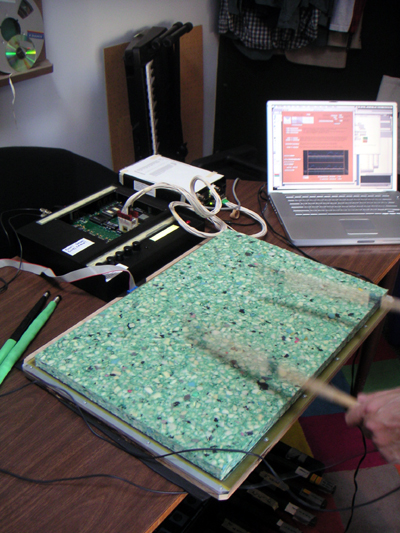

Radio Drum
A 3D capacitive spatial controller that tracks two batons in free space — built as a mouse, reborn as an instrument

Overview
The Radio Drum (also called the Radio Baton) is a 3D position-sensing MIDI controller developed at Bell Laboratories in the mid-to-late 1980s. Two drumstick-like batons, each containing a radio-frequency transmitter at a slightly different frequency, move freely in the air above a flat rectangular antenna surface. The surface contains an array of receiving antenna plates (typically five copper plates). An embedded 80186 processor measures the electrical capacitance between each baton tip and the receiving antennas, computing 3D Cartesian coordinates for both batons in real time — X, Y, and Z (height above the surface) — with approximately 1mm resolution and continuous 100Hz update rates.
The device was originally Bob Boie's attempt to build a "three-dimensional computer mouse." It failed in that role — but Max Mathews, the director of acoustic research at Bell Labs who had written the first-ever computer music program (MUSIC I, 1957), recognized its potential as a musical instrument. Under Mathews' direction, the Radio Drum became a performance controller. Andrew Schloss later pioneered its use as a virtual percussion instrument, developing the gesture recognition needed to detect strikes, rolls, and nuanced drumming techniques from the baton trajectories. Three decades later, the Radio Drum is still in active use. The Computer History Museum holds at least one original unit.
Deep dive
In the mid-1980s, Bell Labs engineer Bob Boie set out to build a three-dimensional computer mouse. His approach was ingenious: measure the capacitance between a handheld transmitter and an array of receiving antennas embedded in a flat surface. By computing the first moment of capacitance across the antenna array, he could derive precise X and Y position; the reciprocal of that first moment gave Z (height). An 80186 embedded processor converted five capacitance readings into 3D coordinates at ~100Hz. Best accuracy was within 0–5 cm above the surface, though useful tracking extended to approximately 1 meter. The 3D mouse concept never caught on — but Max Mathews immediately saw it as a musical instrument.
Max Mathews wrote MUSIC I in 1957 on an IBM 704 — the first computer program to synthesize sound. He directed the Acoustic Research department at Bell Labs for over 30 years, creating the MUSIC-N family of synthesis languages that evolved into Csound, Max/MSP, SuperCollider, and Pure Data. By the 1970s, Mathews had shifted focus to live performance: "Starting with the Groove program in 1970, my interests have focused on live performance and what a computer can do to aid a performer." The Radio Drum was his answer — a way to give electronic musicians the same expressive, physical control that acoustic instrumentalists have over their instruments.
Mathews developed two distinct interaction models. In the "Radio Baton" conducting paradigm, the performer uses the batons like an orchestral conductor's baton, controlling tempo, dynamics, and articulation via Mathews' Conductor Program software. Different spatial zones on the plate trigger different sections. In the "Radio Drum" percussion paradigm, pioneered by Andrew Schloss, the surface is treated as a virtual drum — the performer strikes downward, and the system detects the direction change in Z to trigger notes, with velocity derived from Z-speed. Schloss developed techniques for snare rolls and complex percussion gestures by analyzing the derivative of Z.
David A. Jaffe's 70-minute concerto "The Seven Wonders of the Ancient World" used the Radio Drum to control a Yamaha Disklavier grand piano and a plucked-string/percussion orchestra in real time. "The Space Between Us" had the Radio Drum controlling Trimpin robotic percussion sculptures with string players distributed around the concert hall — an early example of gestural telepresence.
Bob Rocco applied the Radio Baton to music education for deaf children. Because the system provides strong tactile and spatial feedback — the batons vibrate, the surface provides a physical reference — deaf children could feel the relationship between their gestures and the resulting sound vibrations, creating a multisensory music experience that did not depend on hearing.
The Radio Drum is one of the earliest high-bandwidth, continuous 3D free-space gestural controllers. It predates consumer VR controllers and spatial input devices by years. Its papers are foundational in the NIME (New Interfaces for Musical Expression) community. Its lineage traces back to the theremin (1917) and forward to the Leap Motion, Kinect, and Apple Vision Pro hand tracking. The Radio Drum proved that expressive, no-contact 3D control was not only possible but musically satisfying.
Team & pioneers
- Max Mathews. Director of Acoustic Research, Bell Labs; creator of MUSIC I (1957); father of computer music.
- Bob Boie. Bell Labs engineer who designed the capacitive sensing electronics; originally built it as a "3D mouse."
- Andrew Schloss. Percussionist and computer musician who pioneered the Radio Drum as a virtual percussion instrument; continues development.
- David A. Jaffe. Composer of major Radio Drum works including "The Seven Wonders of the Ancient World."
- Bob Rocco. Applied Radio Baton to music education for deaf children.
Media

Sources
- CCRMA Stanford — The Mathews Radio Baton (official project page)
- University of Victoria — Radio Drum (Andrew Schloss: detailed specs, history)
- Wikipedia — Radiodrum
- Computer History Museum — Max Mathews with his Radio-Baton
- Bob Rocco — Max Mathews Radio Baton (firsthand collaboration account)
- CCRMA 252 — Radio Baton technical description (block diagrams, capacitance principle)